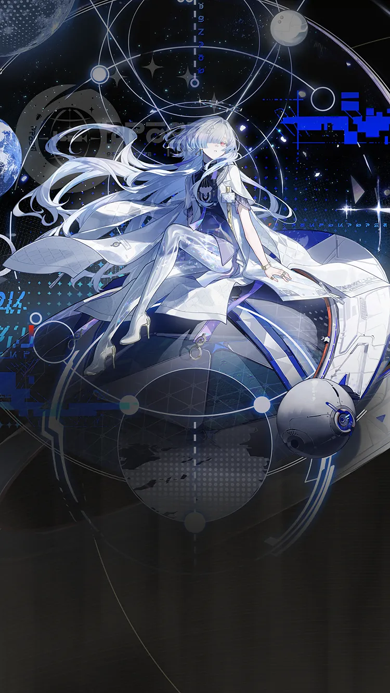

WaveKit
WaveKit

Wuthering Waves Resonator guide
Mornye build, teams, weapons, and Echoes
Premium DEF-based healer support for Tune shells and safer rotations.
Skill priority
Team compositions
Use the helper to match Mornye with your owned Resonators, then prioritise role coverage and a comfortable sustain slot.
Good for players who do not want to force a team they cannot actually build yet.
New player reading guide
If you are only checking Mornye before building a profile, start by confirming their role, weapon type, Sonata, and whether they need a real healer or a specific helper.
Mornye guide overview
Mornye is a Spectro healer support in Wuthering Waves. This WaveKit guide focuses on the practical build choices most players need first: weapon options, Sonata and Echo setup, stat priority, simple rotation notes, and team shells that make sense for real accounts.
Quick build
- Role
- Healer support
- Team type
- sustain, def, tune
- Best weapon
- Starfield Calibrator
- Alternate weapons
- Discord / Dauntless Evernight / Broadblade#41
- Sonata
- Halo of Starry Radiance
- Echo cost
- 4-3-3-1-1
- Main Echo
- Reactor Husk
- Main stats
- Healing Bonus / Energy Regen / DEF%
Stat priority
- Energy Regen until comfortable
- Healing Bonus or kit scaling stat
- HP%, ATK%, or DEF% based on kit
- Comfort substats over perfect damage
Team direction
Mornye is best handled by matching their role with the teammates you actually own.
WaveKit treats Mornye as flexible. Use the team helper to match them with your owned roster instead of forcing one fixed team.
Useful teammates
No fixed teammate pool is required. Prioritise role coverage, safe sustain, and matching build needs.
Simple play pattern
- Build enough Energy Regen so Mornye can heal before panic moments.
- Use support/healing setup first, then leave field time for the damage dealer.
- Prioritise consistency over perfect damage if you are still learning fights.
Build priority
- Difficulty
- Low stress
- Safety
- Real sustain
- Data note
- Guide checked
Mornye is worth building for account comfort because sustain units make more teams easier to play.
Mornye FAQ
What is the best Mornye build in Wuthering Waves?
Mornye's recommended WaveKit setup is DEF-Based Healer Support Build, using Starfield Calibrator, Halo of Starry Radiance, and Reactor Husk as the main Echo target.
What stats should Mornye use?
Start with Healing Bonus / Energy Regen / DEF%. If the rotation feels uncomfortable, improve Energy Regen or defensive comfort before chasing perfect substats.
What teams work with Mornye?
Mornye is flexible, so the best team depends on the Resonators and weapons you own.
Is Mornye beginner friendly?
Mornye's current difficulty is listed as Low stress. If you are learning, pair them with safer sustain or defensive support.